Ponto Pronto Bordon: a lata sai da despensa e vira o jantar de hoje.
×
(00) Quem é a 75 LAB
Não somos uma agência tradicional. Somos uma aceleradora de trade.
Modelo tradicional
BriefingRetrabalhoAtrasoVerba evapora
Modelo 75 LAB
IntençãoImersãoSoluçãoExecuçãoResultado
95%projetos aprovados
−25%de custo de produção com o fornecedor certo
15000+PDVs positivados
+15anos no trade, dos dois lados do balcão
Já trabalhamos a gôndola onde a Bordon vive
Fonte: 75lab.com.br, números da 75 LAB; carteira de clientes de 2025 e 2026.
×
O objetivo de 2027
Tirar a lata da despensa e colocar no jantar de hoje.
100%das lojas do plano com os 6 itens que mais vendem
<5%de falta na prateleira, contra 10,8% do mercado
1ponto extra por loja, comprovado por QR
dezde 2027, em todas as lojas do canal escolhido
Teoria Matriz de Ansoff, 1957: o caminho de menor risco é vender mais do que já existe, nas lojas onde a marca já está.
Fontes: Neogrid via Giro News, ruptura média de jul/2026; Ansoff, Harvard Business Review, 1957. Metas propostas pela 75 LAB.
×
A cesta que mais cresce na mercearia
+9,1%
+9,1%Enlatados e conservas
+5,7%Molhos e temperos
+3,8%Varejo alimentar
Pouco tempo, pouco dinheiro, carne cara.
66%das refeições em casa ficam prontas em até 30 minutos
2024
2025
+22,1%no almoço fora de casa, agora R$ 35,40
out/25
out/26
+17,75%no boi gordo: recorde desde 1994
Por isso a Bordon vende jantar de carne resolvido em minutos.
Fontes: NielsenIQ para ABRAS, semana 44/2026, 52 semanas; Kantar, Consumer Insights 2024, publicado em 17/03/2025; Kantar, 08/07/2025 (1º tri 2025 contra 2024); Cepea via Compre Rural, 05/11/2026.
×
“
Eu quero carne de verdade no jantar, mas não tenho tempo nem dinheiro para fazer do zero.
Ele quer
Comida caseira, com carne, para a família.
Mas
Pouco tempo, carne cara e dúvida sobre a lata.
A Bordon resolve
Carne pronta em 3 minutos, preço por pessoa e prova no prato.
Teoria Jobs to be done, Christensen, 2016: o shopper contrata a lata para um trabalho, resolver o jantar de hoje sem culpa. Ela concorre com o delivery, não só com a lata do lado.
Insight da 75 LAB a partir de Kantar (refeições em até 30 minutos), Worldpanel (orçamento e promoção) e Cepea (preço do boi). Base: jobs to be done, Christensen, Hall, Dillon e Duncan, Competing Against Luck, HarperBusiness, 2016.
×
A venda se decide na loja e trava em três pontos.
76%das compras em hiper e supermercado são decididas na frente da gôndola
Teoria Kahneman, 2011: na gôndola decide o pensamento rápido. Vence a marca reconhecida em segundos.
Trava 1
Não é vista
10,8%de falta na prateleira; quando falta, 26% trocam de marca
312619159
Sharp, 2010 marca cresce quando é fácil de achar
Trava 2
Não é lembrada
+9%de venda quando produtos que se completam ficam lado a lado
+arroz, farofa e couve
Romaniuk, 2023 a compra começa num momento do dia
Trava 3
Não é provada
semanasde efeito da degustação, contra 2 da ponta de gôndola
Degustação
Ponta de gôndola
Sharp e Romaniuk, 2015 crescer é ganhar novos compradores
Fontes: POPAI Brasil via Giro News, 06/10/2010 (76%); Neogrid via Giro News, jul/2026 (10,8%); Helm e Hegenbart, 2011, a partir de Gruen, Corsten e Bharadwaj, GMA, 2002 (reação à falta); Bezawada et al., Journal of Marketing, 2009 (+9%); Chandukala, Dotson e Liu, Journal of Retailing, 2017 (degustação); Sharp, OUP, 2010; Romaniuk, OUP, 2023; Romaniuk e Sharp, OUP, 2015; Kahneman, 2011.
×
Mais que bom, agora feito para vender no PDV.
AntesDepois1234
1TipografiaO mesmo estilo rounded, com mais peso e sem os cortes que deixavam o título infantil.
2Appetite appealO prato em close, ambientado e com textura: dá vontade de comer antes de ler.
3Estrutura do textoUm bloco só, lido de cima para baixo: assinatura, promessa e marca.
4Selo "É só esquentar e pronto"O benefício vira selo. No PDV, é o argumento de compra em dois segundos.
KV atual: Bordon, campanha Mais que bom. KV evoluído: proposta 75 LAB para o PDV.
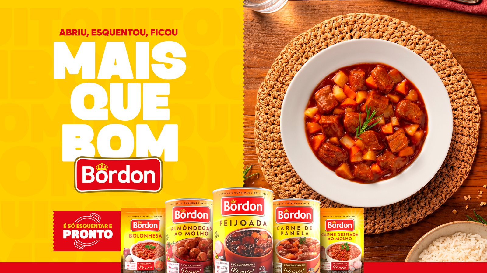
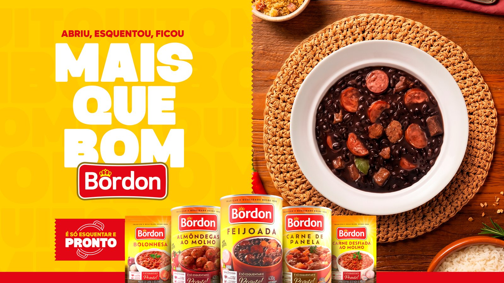
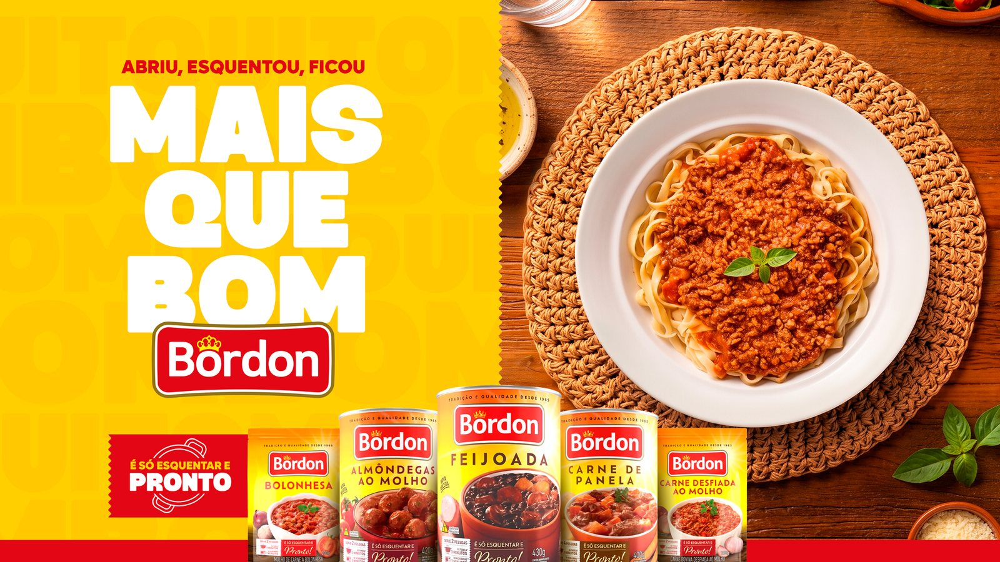
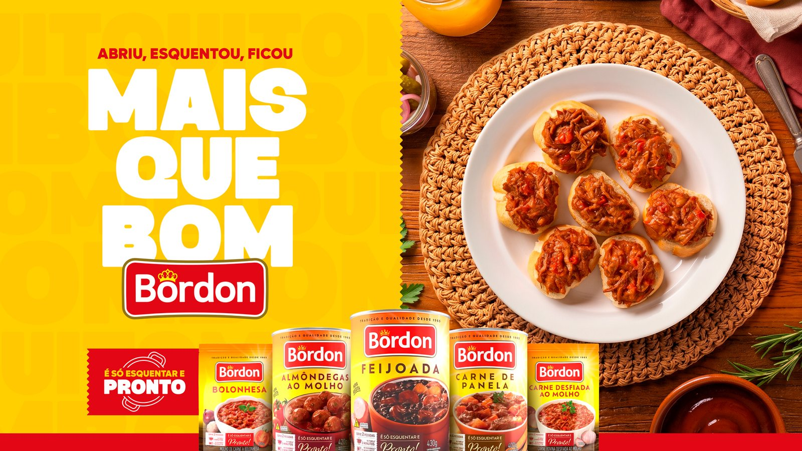
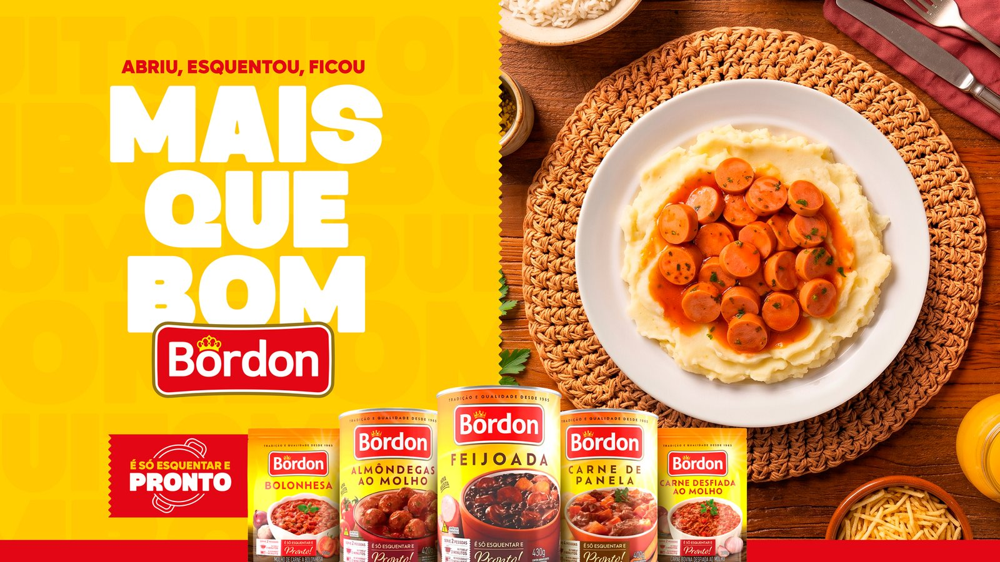
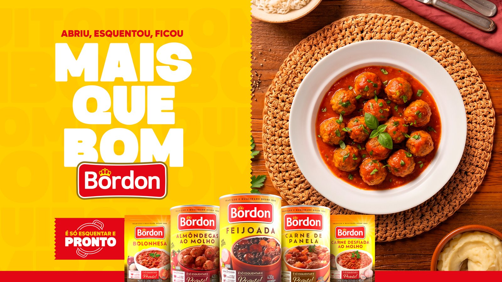
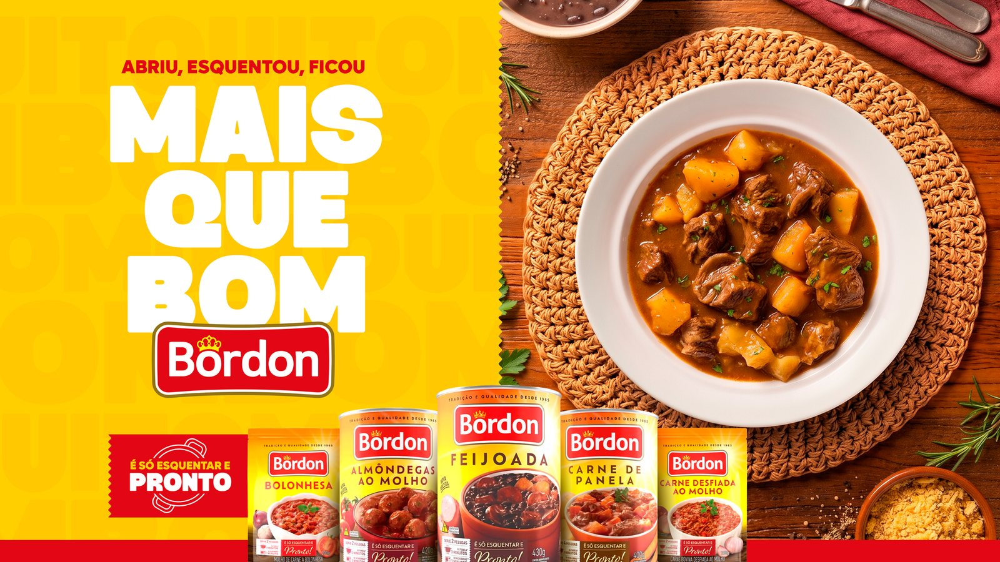
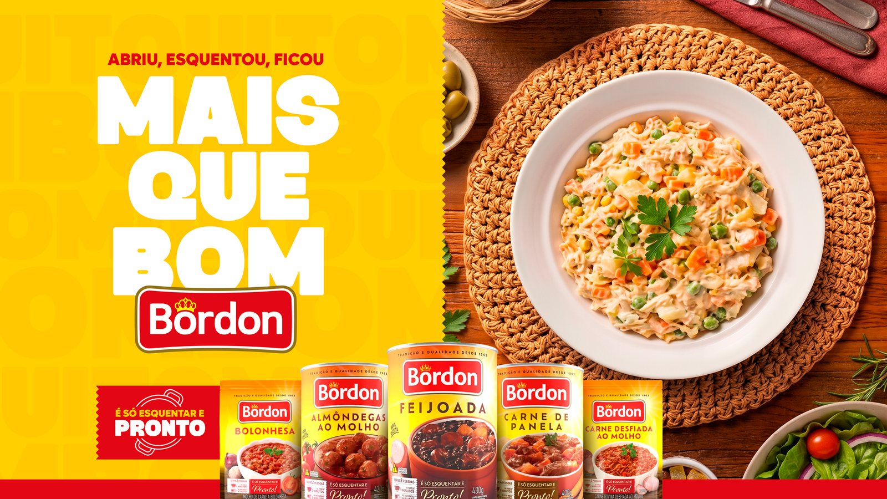
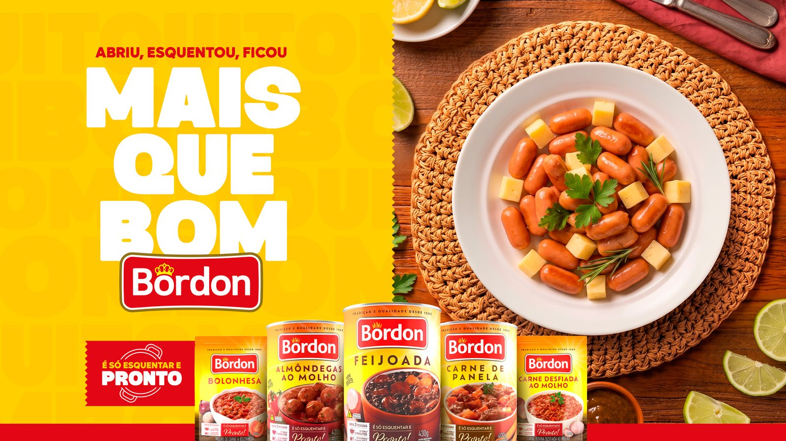
(KV) Um appeal para cada receita
×
Ponto Pronto: em toda loja, o jantar pronto.
1234
1A promessaPreparo e resultado numa frase, lida em dois segundos.
2O prato heróiA feijoada: todos conhecem, poucos querem fazer.
3O selo do benefício"É só esquentar e pronto": o motivo de compra, em toda peça.
4A linha inteiraAs latas da linha juntas: opção para a semana toda.
Teoria Romaniuk, 2018, ativos distintivos: o amarelo, a coroa e o selo "É só esquentar e pronto", repetidos em toda peça, fazem o shopper reconhecer a Bordon sem ler.
Fonte: Bordon, key visual Mais que bom e Manual de Identidade Visual (selos e paleta); embalagens com "Tradição e qualidade desde 1965".
×
Do objetivo ao indicador, em um mapa.
Clique em cada barreira
Ambição
Da despensa ao jantar de hojeBordon em toda loja do plano até dez/2027
Barreiras
Frentes
Canais
Gôndola
Peças
Ativação
Promoção e preço
Digital e encarte
Execução
Ações-chave
Onda 1 no atacarejo e hiper
Bloco amarelo P, M e G
6 itens que nunca faltam
Lata ao lado do arroz e da massa
Busca e encarte nas datas
Degustação no fim de semana
Preço por pessoa
QR em toda peça
Loja perfeita e desafio
Indicadores
Lojas com a linha certa
Falta abaixo de 5%
Ponto extra comprovado
Venda com e sem ponto extra
Provas e vendas na degustação
Nota da loja acima de 80
Ser vista: canal, gôndola e peças garantem a linha certa, sem falta e com ponto extra.
Ser lembrada: a lata ao lado do jantar, na busca e no encarte das datas fortes.
Ser provada: degustação e preço por pessoa tiram o medo do sabor e do preço.
Ser medida: QR em toda peça e a nota da loja perfeita, lidos todo mês.
×
Cada canal com um papel e um kit.
Clique em cada canal
76%
dos lares compram no atacarejo. No Nordeste, 70% do valor.
2022 · 69%2023 · 72%2024 · 74%2025 · 76%
Papel
Volume e Nordeste.
Missão
Encher a despensa.
Itens
Mais vendidos em caixa e feijoada de 830 g.
Peças
Capa de palete, ponta de gôndola, faixa.
Mecânica
Preço por caixa.
17
itens: a linha inteira e espaço para provar.
Papel
Vitrine e degustação.
Missão
Refeições da semana.
Itens
Linha completa, prontos na altura dos olhos.
Peças
Ilha, lata gigante, degustação, clip strip.
Mecânica
Combo jantar com arroz ou massa.
6
itens que não podem faltar.
Papel
Presença perto de casa.
Missão
Jantar de hoje.
Itens
Feijoada, carne de panela, salsicha, salsicha ao molho, almôndegas, carne em conserva.
Peças
Display de caixa, wobbler, stopper.
Mecânica
Caixa mista pelo distribuidor, com as peças.
45,4%
dos lares compram online, contra 31,1% em 2024.
Papel
Ser achada na busca.
Missão
Urgência e recompra.
Itens
Prontos e salsichas.
Peças
Página com foto do prato e preparo.
Mecânica
Busca paga por feijoada, comida pronta e salsicha.
Set a dez
é quando empresas fecham cestas.
Papel
Volume e marca dentro de casa.
Missão
Preço e validade longa.
Itens
Carne bovina em conserva, salsicha, feijoada e almôndegas.
Peças
Catálogo e cartão de receita na cesta.
Mecânica
Condição por volume a partir de setembro.
Teoria Kantar, 2024, missões de compra: abastecer, repor, resolver uma urgência ou comprar perto de casa. Cada missão pede uma loja diferente.
Fontes: NielsenIQ para ABAAS, mar/2026 (penetração do atacarejo em 2025 e participação regional, acumulado de 2026); Worldpanel by Numerator, Brand Footprint 2026, via Central do Varejo (e-commerce); Kantar, 19/02/2024 (missões).
Olhos para o jantarPratos prontos na altura dos olhos.
Mãos nos mais vendidosSalsichas e almôndegas ao alcance da mão.
Bloco verticalA marca toda junta, do topo à base.
Faixa com a cor do produtoO shopper acha pela cor antes de ler.
Nunca faltaFeijoada e salsicha com 4 frentes ou mais.
Preço por pessoaO valor da refeição dividido por quem come.
Teoria ECR, 1995, gerenciamento por categoria: o varejo dá um papel a cada linha. Conservas são rotina, pratos prontos são conveniência.
Base: gerenciamento por categoria (ECR e The Partnering Group, 1995) e ativos distintivos de marca (Romaniuk, Building Distinctive Brand Assets, OUP, 2018). Gôndola em módulos de 1 m e prateleiras a cada 22 cm, desenhada em escala dentro de cada tamanho de loja; medidas de embalagem de referência, conferidas na visita às lojas.
×
Dez peças, um só Ponto Pronto.
Clique em cada peça para ampliar o 3D
Pesadas atraem e fazem provar
Médias explicam a ocasião
Leves convertem na prateleira
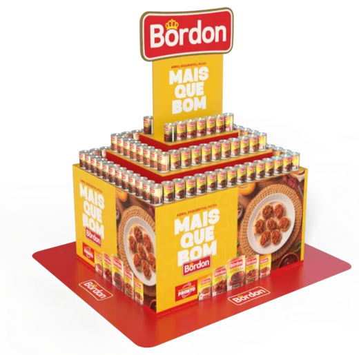
Resolve: ser vista
Ilha capa pallet
Hiper e atacarejo · 120 x 100 cm
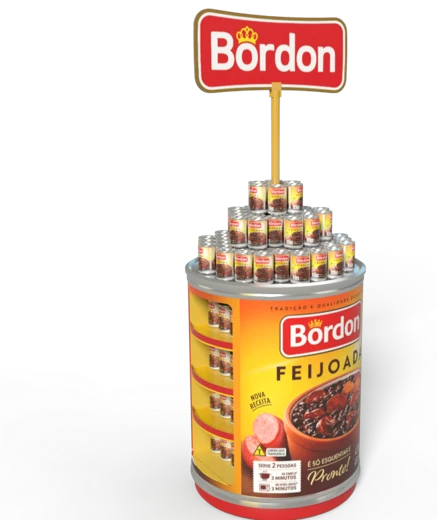
Resolve: ser lembrada
Display lata gigante
Super · Ø 70 x 189 cm
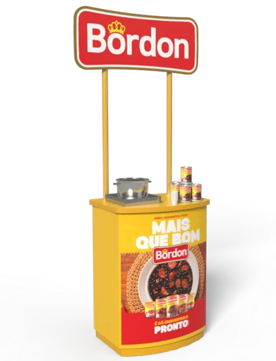
Resolve: ser provada
Balcão de degustação
Fim de semana · 70 x 53 cm
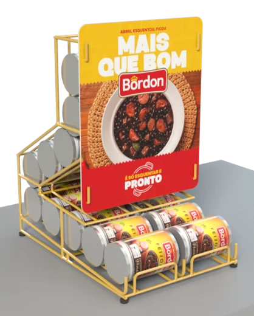
Resolve: ser escolhida
Display de balcão gravitacional
Checkout e bairro · 20 latas
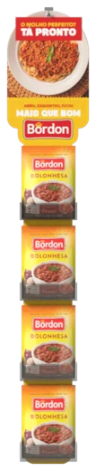
Resolve: ser lembrada
Clip strip de cross
Massas e molhos · 27 x 120 cm
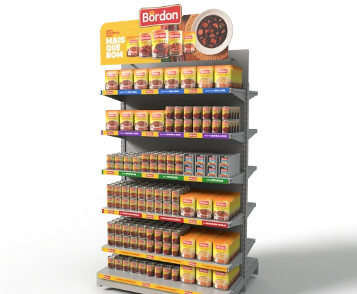
Resolve: ser vista
Testeira e faixas por ocasião
Gôndola · 124 x 47 cm
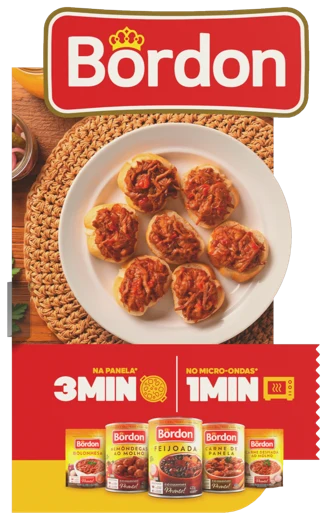
Resolve: ser escolhida
Stopper
Todos · 18 x 30 cm
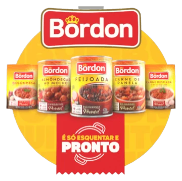
Resolve: ser escolhida
Wobbler com selo
Todos · Ø 16 cm
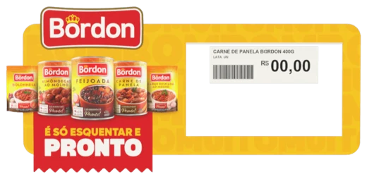
Resolve: ser escolhida
Precificador
Todos · 33 x 16 cm
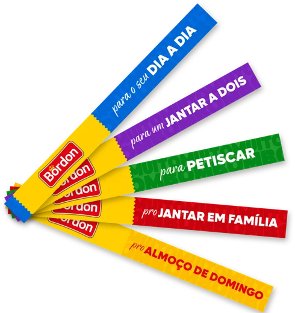
Resolve: ser lembrada
Faixas por ocasião
5 ocasiões · 40 x 4 cm
Teoria POPAI, 2014: display na loja aumentou a venda em 19% no canal alimentar. Pesadas atraem, médias explicam, leves convertem.
3D em escala real (MODO 17), latas e sachês nas medidas das embalagens. PS, polionda e aramado; arte trocável sem ferramenta. Medidas confirmadas no projeto executivo de cada peça.
×
Provar, levar e voltar a comprar.
Clique em cada frente
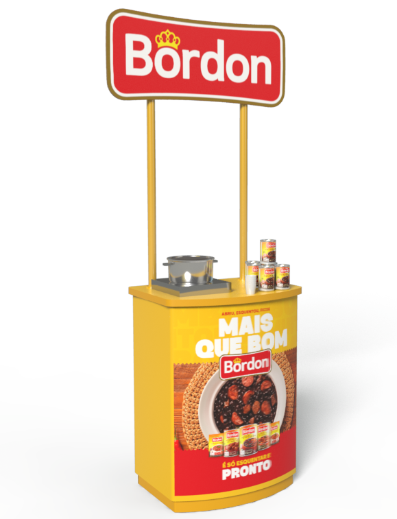
"Esquentou, provou."
Formato
Balcão com promotor: feijoada e carne de panela.
Quando
Sexta e sábado nas lojas grandes; mais no inverno.
Conversão
Provou, ganhou desconto na hora.
Por quê
Traz gente nova e o efeito dura semanas.
Teoria Chandukala, Dotson e Liu, 2017: a degustação traz compradores novos para a categoria e o efeito dura semanas.
Combo jantar
Lata com arroz ou massa, preço de refeição.
Leve mais, pague menos
Preço por caixa no atacarejo.
Compre e ganhe
Brinde de cozinha nas datas fortes.
Kit cachorro-quente
Salsicha, pão e batata palha.
Preço por pessoa
A referência deixa de ser o centavo.
Oferta com medida
No máximo 1 oferta a cada 4 itens.
Teoria Tversky e Kahneman, 1974: o primeiro preço vira a régua. Anderson e Simester, 2001, com atum enlatado: oferta em mais de um quarto dos itens dilui o efeito.
Arroz, farofa e couveclip strip no corredor do arroz
Massasclip strip "molho pronto com carne"
Pão e batata palhakit cachorro-quente na padaria
Cuscuz e tapiocano Nordeste, ao lado do flocão
Bebidasdisplay de balcão do petisco
Pães e torradaslanche pronto na padaria
Teoria Bezawada et al., 2009: produtos que se completam, frente a frente no mesmo corredor, venderam 9% mais.
Encarte do varejista
Selo de preparo e preço por pessoa em todo anúncio.
Quarta e sábado de feijoada
Lembrete fixo no encarte e no app.
Busca paga
Feijoada, comida pronta e salsicha nos apps.
Página de produto
Foto do prato, preparo e porções.
QR com receitas
Receitas de 5 minutos; o QR também prova a instalação.
Mídia perto da loja
Anúncio no celular de quem está perto da degustação.
Teoria Sharp, 2010, disponibilidade mental: a marca precisa vir à cabeça antes da loja. 45,4% dos lares já compram online.
Fontes: Chandukala, Dotson e Liu, Journal of Retailing, 2017 (degustação); Anderson e Simester, Marketing Science, 2001 (ofertas na categoria de atum enlatado); Tversky e Kahneman, Science, 1974 (ancoragem); Bezawada et al., Journal of Marketing, 2009 (cross).
×
Doze meses, três picos de força.
Clique em cada mês
manutençãoativaçãopico: ponto extra, degustação e encarte
Jan · 2027
Férias: jantar sem fogão quente
Férias escolares
Produtos em foco
Salsicha, maionese de frango, carne desfiada
Na loja
Kit cachorro-quente e lanche pronto na padaria
Canal em destaque
Super e vizinhança
Fev · 2027
Carnaval: petisco pronto
Carnaval, 09/02
Produtos em foco
Salsicha aperitivo, salsicha ao molho
Na loja
Display de balcão Petisco junto das bebidas
Canal em destaque
Vizinhança e atacarejo
Mar · 2027
Onda 1 no atacarejo e no hiper
Consumidor, 15/03 · Páscoa, 28/03
Produtos em foco
Linha completa
Na loja
Capa de palete, ilha Ponto Pronto e lançamento da degustação
Canal em destaque
Atacarejo e hiper
Abr · 2027
Volta à rotina: jantar em 3 minutos
Retomada da rotina
Produtos em foco
Carne de panela, bolonhesa, almôndegas
Na loja
Clip strip no corredor de massas e arroz
Canal em destaque
Supermercado
Mai · 2027
Onda 2 e Dia das Mães
Dia das Mães, 09/05
Produtos em foco
Pratos prontos
Na loja
Onda 2 em super e vizinhança; combo jantar "folga da cozinha"
Canal em destaque
Super e vizinhança
Jun · 2027
Inverno e São João
Namorados, 12/06 · São João, 24/06
Produtos em foco
Feijoada, costela com mandioca, carne desfiada
Na loja
Degustação reforçada e cross com cuscuz no Nordeste
Canal em destaque
Atacarejo e Nordeste
Jul · 2027
Férias de inverno: caldos e feijoada
Férias escolares
Produtos em foco
Feijoada, carne em cubos, salsicha
Na loja
Sábado de feijoada no encarte e no app
Canal em destaque
Hiper e digital
Ago · 2027
Dia dos Pais: sábado de feijoada
Dia dos Pais, 08/08
Produtos em foco
Feijoada, costela com mandioca
Na loja
Ilha com feijoada e combo com farofa e couve
Canal em destaque
Hiper e super
Set · 2027
Cestas e Dia do Cliente
Dia do Cliente, 15/09
Produtos em foco
Carne em conserva, salsicha, feijoada
Na loja
Catálogo para montadoras de cestas; leitura do 1º semestre
Canal em destaque
Cestas e atacarejo
Out · 2027
Dia das Crianças: lanche pronto
Dia das Crianças, 12/10
Produtos em foco
Salsicha, maionese de frango
Na loja
Kit cachorro-quente; ajuste das peças pela leitura
Canal em destaque
Super e digital
Nov · 2027
Black Friday: abastecer a despensa
Black Friday, 26/11
Produtos em foco
Itens de giro em caixa
Na loja
Leve mais, pague menos e preço por caixa
Canal em destaque
Atacarejo e digital
Dez · 2027
Fim de ano: ceia e dias seguintes
Natal, 25/12
Produtos em foco
Fiambre, salsicha aperitivo, feijoada
Na loja
Petisco pronto na ceia e cestas de Natal
Canal em destaque
Todos os canais
Teoria Romaniuk, 2023: cada data forte é um momento de compra. A Bordon aparece onde o shopper já está decidindo o que comer.
Datas de 2027: Carnaval, Páscoa, Dia das Mães, Dia dos Pais e Black Friday calculados pelas regras de cada data; demais datas fixas. Picos em março (onda 1), maio e junho (onda 2, inverno e São João) e novembro (Black Friday).
×
Do sim à loja em 14 semanas, com prova loja a loja.
Clique em cada aba
dez26jan27fevmarabrmaijunjulagosetoutnovdez27
Visita às lojas e KV final75 LAB
Projeto executivo e produção com QR75 LAB
Onda 1: atacarejo e hiper75 LAB e trade
Onda 2: super e bairro75 LAB e distribuidor
Degustação nos fins de semanaPromotoria
Encarte, busca e appTrade e marketing
Leitura mensal e ajuste75 LAB
Marcos
Sim da BordonOnda 1Onda 2São JoãoBlack Friday
RfazAaprovaCé consultadoIé informado
Marketing Bordon
Trade Bordon
Distribuidor
Varejista
Promotoria
75 LAB
Estratégia, KV e peças
A
C
I
I
I
R
Espaço, ponto extra e encarte
C
R·A
C
C
I
C
Instalação das peças
I
A
I
C
C
R
Pedido e abastecimento
I
A
R
C
C
I
Reposição e degustação
A
A
I
C
R
C
Leitura mensal e ajuste
A
C
I
I
I
R
Peça com QRFoto e GPSPainelDecisão
One ShotInstalação comprovada
Quem instala escaneia o QR e fotografa: o painel grava loja, data, hora e GPS.
On TimingAo vivo, toda semana
Uma tag nas peças grandes avisa se a peça saiu do lugar.
Loja perfeitaNota de 0 a 100
Mix, falta, bloco amarelo, ponto extra e preço. Meta: 80 em toda loja.
Teoria Gruen, Corsten e Bharadwaj, 2002: quando falta o produto, 31% compram em outra loja. Medir a loja é proteger a venda.
Considerando aprovação no início de dezembro de 2026. Produção de referência da 75 LAB: peças pesadas em até 30 dias úteis, leves em 10. Matriz de papéis proposta pela 75 LAB, a validar com a Bordon. Reação à falta: Helm e Hegenbart, 2011, a partir de Gruen, Corsten e Bharadwaj, GMA, 2002.
×
De volta ao objetivo
Mais que bom, agora em toda loja.
Para começar, uma decisão: qual canal entra na onda 1?
VistaGôndola em bloco amarelo6 itens que nunca faltam
LembradaLata ao lado do jantarAchada no encarte e no app
ProvadaDegustação no fim de semanaPreço por pessoa
MedidaQR em toda peçaNota da loja perfeita
Caique Becker, cofundador e Head de Trade · caique.becker@75lab.com.br Daniel Coimbra, cofundador e CEO · daniel.coimbra@75lab.com.br contato@75lab.com.br · 75lab.com.br · @setecincolab · (11) 98676-5634
75 LAB Estratégia, Design e Produção Ltda · CNPJ 55.470.982/0001-77 CENU, Centro Empresarial das Nações Unidas, Torre Norte · Av. das Nações Unidas, 12.901, Brooklin, São Paulo, SP, CEP 04578-910


 +arroz, farofa e couve
+arroz, farofa e couve